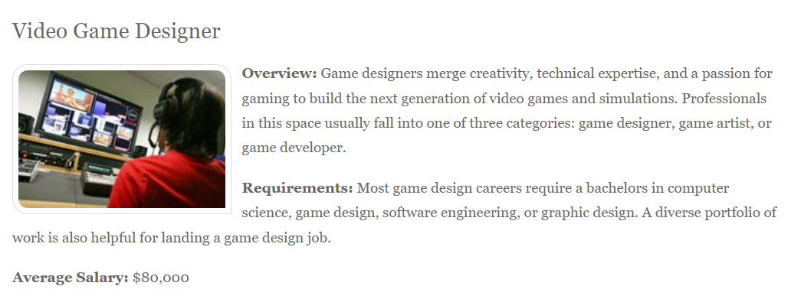
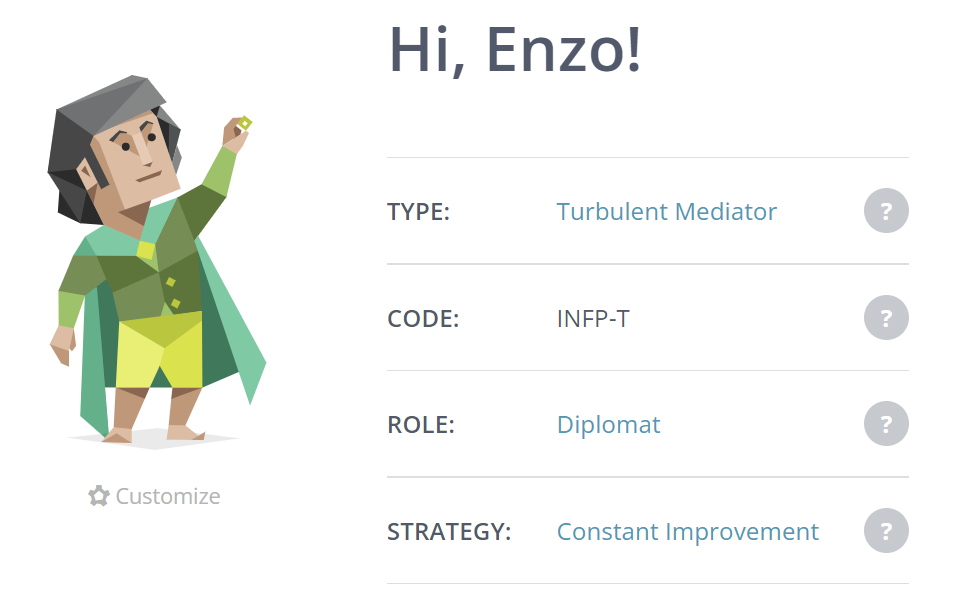
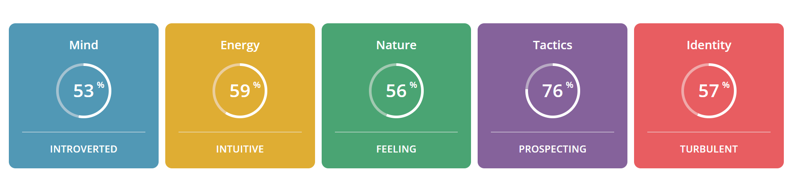
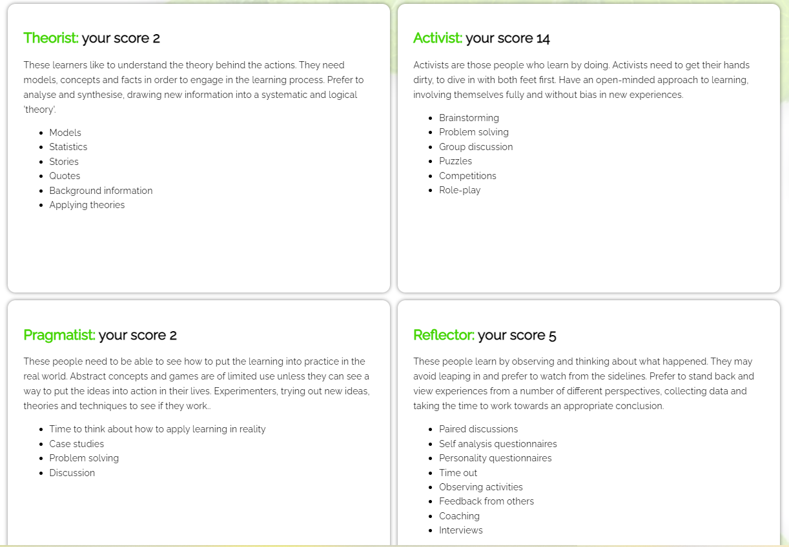
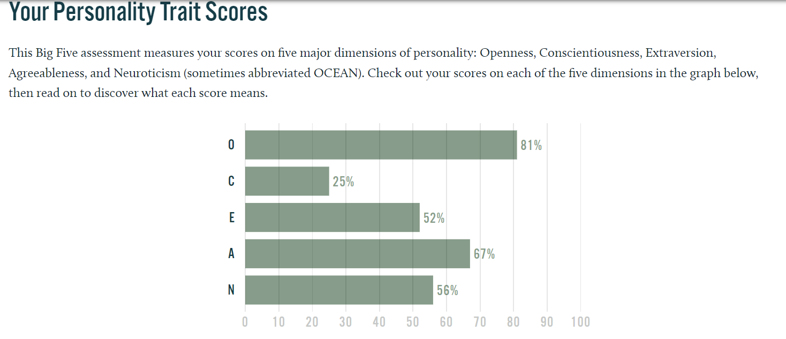

About Me
Background
Hello, my name is Rafael Lorenzo Tangga, but people call me Enzo. I was born in the Philippines as the youngest of 5 children, with an age gap of 7 years between me and the 2nd youngest. I moved to Australia with my family when I was 2 and grew with people talking to me in English and Tagalog. Despite that I only gained fluency in only English and can only understand what people are saying when they speak Tagalog and can’t speak myself.
Education and Work Experience
I finished primary school at a place called Brentwood Park Primary School and Finished High school next door to my primary school at a place called Kambrya College. Throughout my studies I was able to finish multiple courses which include: A Sport & Rec VET course, A First Aid Training Course, A Mental Health First Aid Course and A Manual Handling Training Course. Most of the courses and trainings were required for my current job as a junior disability support worker. I work at an organisation called Interchange Outer East (IOE), which assist in the care of people with disabilities to help them at home or during recreational activities. I have only recently started working here however I have been volunteering there for most of my high school life. Also the proud creator of "hit" Youtube video Fun games with enzo.
Hobbies
I would very much label myself as a geek or a weeb. I love anime and manga and was influenced to watch it by my siblings ever since I was a child and I have continued to watch/read it even long after they grew out of it and stopped watching a lot. Also, just like most people my age I enjoy my fair share of video games, The main games that I play are either strategy turn bases RPGs like fire emblem or Persona 5, or Souls games like Sekiro or Elden Ring. My final Main hobby is Dungeons and Dragons (DND), Me and my friends started playing it just before the first lockdown. My groups have multiple different stories with different people acting as the Dungeon Master, but the longest running one is the campaign I created.
Intrests in IT
What is your interest in IT? When did your interest in IT start?
My main interest in IT is using it to build and create video games. Ever since I was a child, I always wanted to create games and despite the fact that the hyper realistic virtual reality technology I imagined myself creating isn’t a thing yet, I am still interested in the creation of past and modern video games alike. Furthermore, the fact that IT is becoming more and more prevalent as time goes on is very appealing to me, as it ensures that I will most likely be able to get a decent job if I succeed in learning how to do IT.
Why did you choose to come to RMIT?
There are a few reasons for me to come to RMIT. The first reason is the fact that it is known to be a very good school when it comes to technology, so it was a really good option for me. Also, I really liked its location, the RMIT city campus is very close to many places so I can easily buy food or clothes if I wanted to do that after classes. I also have cousins that live near RMIT so I can stay with them if I stay around the area too late or if I need to wake up extremely early for a class.
What do you expect to learn during your studies?
During my course I expect to learn different coding languages and their applications, as well as the different types of jobs people in IT can do. I also expect to learn how to function as a team during projects and am curious to learn the things we need to keep in mind when working in the IT industry. Furthermore, I expect to learn about different forms of software and hardware that is involved as well as how to efficiently maintain them to a high degree. Overall my ideas of what I expect to learn is the broad detail of IT and the Industry to help me and my classmates survive In the world of IT.
Ideal Job
A description of the position, and particularly what makes this position appealing to you.
A game designer’s purpose is self-explanatory, they are the people who design games. This can be broken up to 3 major areas which is the design, art and programming, all of which Interest me as I have always wanted to create games since I was a child. The designers are like the brains of the game creation process, the come up with the ideas, the story, the game play and more and cooperate with the artists and programmers in order to ensure they are following the intended design of the game. The artists are like the skin of the process (This analogy is weird, but I can’t go back now). They are the in charge of the parts that people see. They create everything from the character models to the world the character is in. Finally, the game programmer is the like the muscles of the process they are what allows everything to move and function and are also in charge of creating other aspects like adding multiplayer elements or allowing games to be cross platform.
A description of the skills, qualifications and experience required for the position.
Most games designers require a degree in computer science, game design, software engineering, or graphic design, however they usually accept those with degrees of similar computer-based forms of study. They also need to be able to understand and write common coding languages such as Java, C and C++ and would even benefit in knowing how to create AI, how to do 2D or 3D computer animations or have experience in creative writing. Furthermore, it is advantageous for a person to be interested and/or actively play video games or even be a video game nerd, as companies want people who have experience playing games as they have the knowledge of what makes games good or bad.
description (in your own words) of the skills, qualifications and experience you currently have.
I am currently doing a bachelors of IT, despite that not generally being a good match for game design, it is a passible degree to be able to go into it as they are looking for people with experience with coding and other forms of IT knowledge. Furthermore, despite not being great at using the language I have a small amount of experience using Java as it was necessary for my computing subject in school. Moreover, I am currently very active when it comes to gaming and am generally creative when it comes to storylines and art as I play a lot of Dnd where I have to design my own characters and the storyline of the entire campaign.
A plan describing how you will obtain the skills, qualifications and experience required for the position.
Well first of all I intend to finish my course, which will allow me to have a degree capable of getting this job. Throughout my course I should be able to learn different coding languages which may include Java, C or C++. If not, I will find an online course that will be able to teach me to become good at the languages I need. Moreover, I intend to take up artificial intelligence at a major subject which will assist me to learn how to create the AI for the games that I may need to work on as a game designer.
Personal Profile
Myers-Briggs test
 I have done this test many times in the past and always get similar results, the only result that changes is the first one which shows if you are introverted or extroverted. Sometimes when I take the test I am an ENFP but it seems that this time I am a INFP. This is reflected by the fact that the I am only 53% introverted meaning that I am almost as much as an introvert as I am extrovert. This means I will be able to be compatible with teams that are very reserved or teams that are more in your face when it come to interaction. Furthermore, I am a mostly intuitive and prospecting which means that I both have a curious and open mind while also being very flexible and good at improvising. This means I can assist my team come up with new unique ideas or come up without of the box strategies to help us with different situations. Moreover, I am also mostly feeling and turbulent which means that I am very self-aware and strive for social harmony which can allow me to settle disputes in my team and understand if I am doing anything wrong myself.
Mumford and Honey LSQ
The test says that I am predominantly an activist, this means that I learn best when I come to hands on work instead of concepts and or learning how it works in real life. This means I will be able to learn things easily if I ask my team to show me how to do it and see if I can properly apply the knowledge, they have taught me. With this new found knowledge when learning concepts with a new team I will always take a practical approach on how to do the concepts to learn more efficiently and help the team grow.
Big Five Personality Test
My highest score is openness which means that I am very creative, adventurous and can have an abstract way of thinking. This can allow me to assist my team with problem solving and creating new creative ways to complete our project. It says similarly to the Briggs test that I am a bit extroverted but still can be introverted as the extroversion level was 52%, this has similar connotations to the Briggs test as it means that I can function easily in both introverted and extroverted teams. Moreover, I have a high agreeableness which means that I have a strong empathy and like helping other people out. This is great for a team environment as it means that I am a good team member and will always give help when asked for.
Project idea
Overview
This project will be a retro style 16 bit, turn based RPG called Lustre Quest, that uses DND elements in terms of layout, combat, and terminology. And takes inspiration of early fire emblem games in the way the story is told and how the plot develops. Will use Unity as a game engine as it is a beginner friendly and well-known game engine. The story of the game is inspired of my DND campaign for both the fact that I enjoy the world and the story I have made but also the fact that I wont have to make new characters and plots.
Motivation
I was mainly motivated by my love for DnD and the world the fact and that there are no decent modern DnD video games. Moreover, I was motivated by my love of fire emblem. I was originally planning for it to purely a fire emblem like game however once I realised the similarities to DnD and its turn based almost chess like combat I knew I had to do something that can fit both of my cravings. Furthermore, making a game will also give me experience that I will need to get my ideal job of becoming a game designer.
Description
Character
The game will have 5 protagonists with vastly different abilities, Enya Rein is a former assassin from the black markets of Cerios and acts as the party’s maid melee damage dealer, Isabelle Volnier is an lost noble trained in the mystic arts and acts as the party’s main magical damage dealer, Mookie is an anthropomorphic mushroom that is filled with magic and acts as the party’s main healer, Mara Stormwind is a frosted giant that comes from a benevolent tribe in the Frost Moon Forest and acts as the party’s main tank, finally Octavia, a mysterious halfling that manipulates people with her word and acts as the party’s main support. Throughout the game the player will slowly see the interactions of the party members and learn more about their past as well as their dynamics with each other.
Stats
In normal dnd a character will have a total of 9 different stats which are: Dexterity(dex), strength(str), Constitution(con), Intelligence(int), Wisdom(wis), Charisma(cha), Armor Class(AC), Heath Points(HP), and Speed(Spe). However, since the player directed roleplay element cannot be recreated without highly intelligent AI that has not been created in a game yet, some stats will be obsolete and needlessly complicated to have. For example, in combat when casting a spell, you can either use intellect, wisdom or charisma, the main difference of these stats is only used outside of combat. Because of this I have decided to only use Dexterity, strength, Intelligence, Armor Class, Health Points, and speed. Each stat will have a different purpose for the character, Strength will assist in successfully hitting and increasing the damage of melee attacks, Dexterity will assist in successfully hitting and increasing the damage of melee DEX attacks and long-range attacks as well as increase the user’s initiative in the turn order. Intelligence will increase the success rate and damage of magic, Armor will decrease the likelihood of being hit by an enemy’s attacks, Health points is the amount of damage that a character can take before dying and speed dictates how many spaces a character can move in a turn.
stages
There will be 14 stages, 10 of which are main quests while the other 4 side quests. Each stage will have a cutscene with text dialogue for the characters to explain what is going on in the scene, as well as a cut scene after the stage ends along with more text dialogue from the characters depending on the situation. Each stage will be in a map with a grid on it, the map will contain doors, objects, traps, enemies as well as the main characters each of which take up at least 1 square in the grid. Each turn either a character or an enemy will be able to move the number of spaces on the grid equal to their speed stat and take an action to attack, use a spell or item. The stage ends when the boss is defeated. After every stage the player is rewarded with coins which allow them to buy items in the shop which they gain access to in between stages.
Spells and Inventory
Each character has a spell counter for how many spells they can use each level, this counter resets after every level or can replenish if the character uses a potion. This same rule applies to health which resets after every level but can only replenishes mid-level if the user uses a potion or is healed by magic. Furthermore, items are not reset, and the player must buy them after each level. Each character has their own inventory and can only use items they have on them, if two characters are side by side they can give items to the other to one another.
Leveling Up
After completing 2 stages all main characters will level up, leveling up always increases the characters Health points but does not guarantee increasing other stat. If a stat does not increase during a level, that means the character gains a skill instead. In standard DnD the player can customise exactly what skills or spells they might want to learn depending on their class however, it would be very difficult to create a large list of spells and abilities to use for each player, so a larger list and more customisation can hopefully be implemented in the future, for now all skills and spells learned are automatic.
Preforming Actions
Whenever a character makes an action other then moving there will be a random number generator that picks a number between 1 and 20 if the number is 1 then the action fails and a negative affect happens to the user such as attacking ones ally or healing an opponent. If the number is a 20 it is an automatic success, and the action will double in potency. If it the number is from 2 to 19 then the number will be added to a modifier based on a specific stat of the user, this modifier can be positive or negative. the total number will be put against a specific threshold that changes depending on the target, if the number exceeds the threshold, then the action is successful, if not then the action fails.
spell/Weapon/item lists:
spell
- Fireball
- Lightning bolt
- Eldritch blast
- Healing word
- Cure wounds
- Shield
- Magic missile
- snowball swarm
- Chain heal
- Lighting blast
Weapon
- Dagger
- Shortsword
- Longsword
- Lance
- spear
- Bow
- Axe
- Great Axe
- Hand Axe
- Blow dart
Item
- Health potion
- Magic potion
- Arrows
- Strength potion
- Speed potion
Skills Required
In order to do this game, I would need to understand how to use the unity engine to a good degree. Furthermore, I must be decent at C++ as that is the base coding language for unity. If not I will need to use an 3rd party source to convert python into a viable language. I would also need to learn about game AI to be able to make the opponents do their turns properly. The final key skill I need is how to create the pixel art and animation for my game as well as how to source the sound track and sound effects.
Outcome
If I accomplish this project, I will have a fully functional game, which will help me get experience creating game and help me with becoming a game developer. Furthermore, I will have a game that will hopefully be able to fill the void of a DnD, despite not having some of the elements of DnD I believe the game has enough similar mechanics for it to seem like a less complicated and more accessible version of the games that I have based this from. However, If I get the chance after making it to, expand upon the game I would like to as I believe the game would improve if I add some details that I wont be able to initially.
*All websites referenced has a link to the source